HoshiyarPK
Teaching Pakistan's most-targeted generation to pause before they pay.
A behavioral training app that turns scam awareness into muscle memory through simulated scam calls, real-time message verification, and a reporting flow built for people who don't trust institutes.
Overview
The end to end journey
The Problem
The ongoing proliferation of digital frauds and scams in Pakistan does not stem from a knowledge gap; rather, they occur at a rapid scale due to a pressure gap. Most individuals understand phishing and modern scams, yet end up surrendering their OTP or sensitive information the moment a scammer manufactures a crisis over the phone.
To truly understand the problem, we conducted 21 user interviews, transcribed each session, and coded them for common qualitative themes. That qualitative analysis was then paired with a survey of n = 185 participants to measure how broadly those patterns held at scale.
The insight that reframed the brief: this is NOT an awareness problem. Rational thinking collapses under acute stress and every existing intervention, SMS alert, hotline, and the law itself assumes it would not.
Where existing solutions fall short
| Response | Timing | Simulation | Personalized | Reporting | Reduces shame | Urdu |
|---|---|---|---|---|---|---|
|
{{ row.name }}
{{ row.sub }}
|
{{ row.c1 }} | {{ row.c2 }} | {{ row.c3 }} | {{ row.c4 }} | {{ row.c5 }} | {{ row.c6 }} |
HoshiyarPK Active, experiential, built around panic |
✓ | ✓ | ✓ | ✓ | ✓ | ✓ |
Every existing response is built for a calm reader. None of them are built for the seven seconds where the actual decision gets made.
Research → Design
Interviews surfaced patterns a survey alone couldn't:
Design Process
From Whiteboard to High-Fidelity: We began by brainstorming collaboratively as a team, building user personas grounded in our interview insights. Next, we sketched initial screens and storyboarded the core scam scenario, evaluated early concepts using paper prototypes, and transitioned only the elements that proved effective into the high-fidelity build.
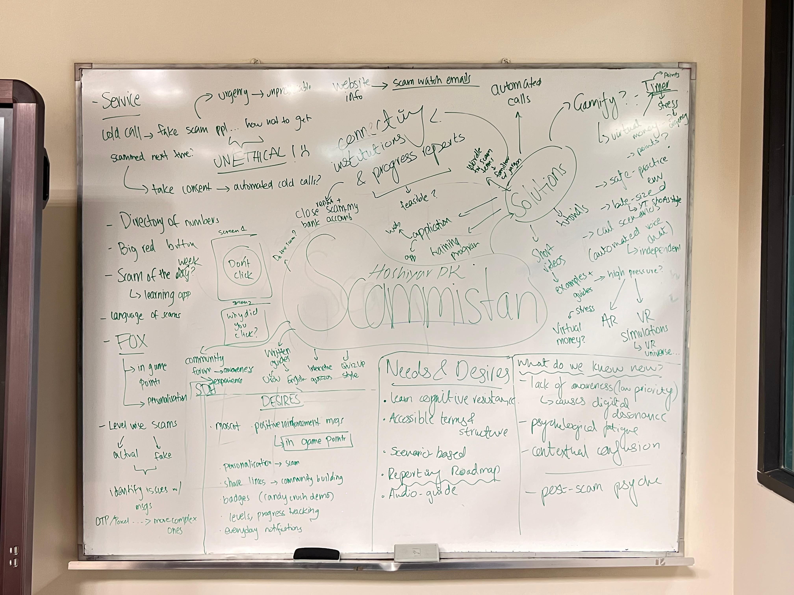
User personas
Meet the two primary user personas, Omar Tareen and Seemi Mumtaz, who helped keep HoshiyarPK user centered.
The storyboard walks a specific persona, Omar, a 67-year-old, through a real vishing attempt end to end hand drawn and colored by me!
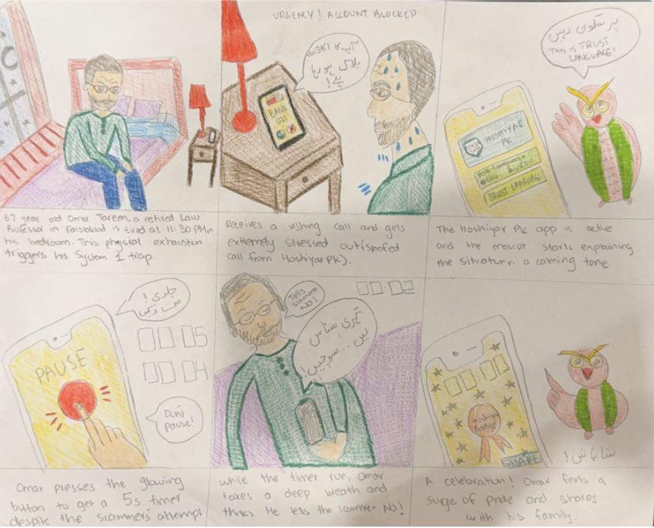
Additionally, made A LOT of sketches!! From rough screens to the application flow - pens and papers became my best friend.
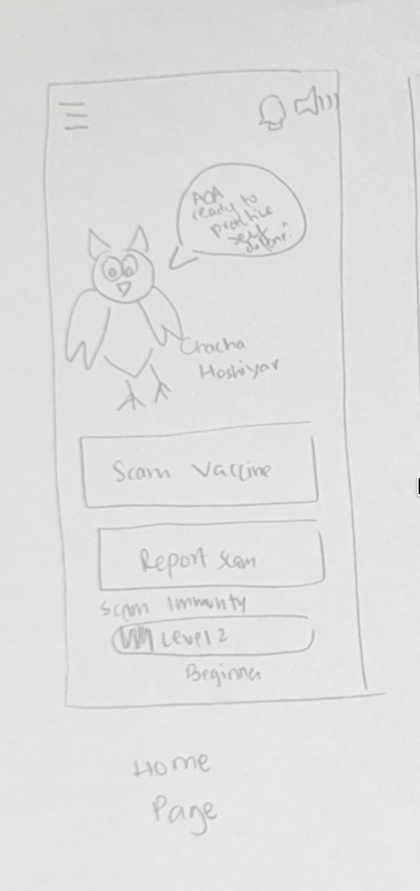
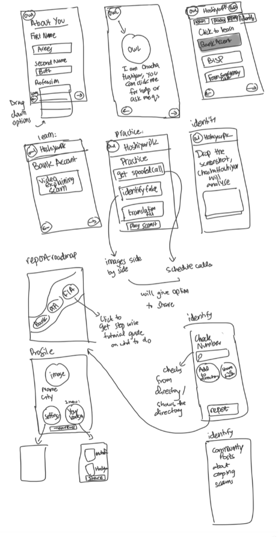
An entire flow using paper prototypes was sketched before opening Figma. Here are some screens I made:
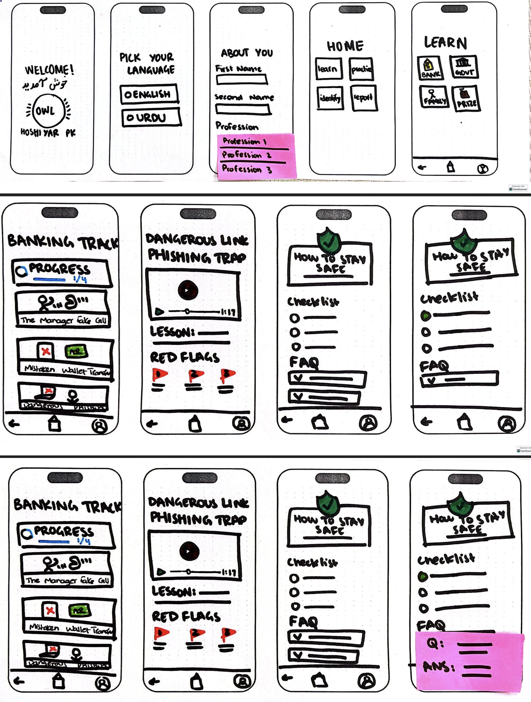
We tested these paper prototypes first: observing where users hesitated, misread an icon or reached for non-existent buttons. We carried forward only the design decisions that survived that round into the high-fidelity Figma screens.
What paper prototype testing broke
Every fix below came from watching a real user get stuck. Click to view the problematic screens in the paper prototype!
A clear pattern emerged: novelty lost to consistency almost every single time. Screens that reused a pattern already established elsewhere tested well whereas screens designed to feel distinctive created friction because users had no existing mental model to map them onto.
The Solution: HoshiyarPK
Keeping all these factors in mind, we finally sat down to build HoshiyarPK. Hoshiyar (ﮨﻮﺷﯿﺎر) is a common Urdu word translating to alert, vigilant or wise. Throughout the application, users are guided by Chacha Hoshiyar, an owl mascot voiced in both Urdu and English, who provides the emotional support traditional institutions often lack by encouraging users and never shaming them.
Mascot development
We explored several animal mascots (lions, cats, dolphins and even bunnies) before settling on an owl: culturally understood as watchful and wise and visually distinct from the bank and security shield iconography already crowding this space. Chacha Hoshiyar's expressions and props were sketched to carry emotion on their own, since he needed to read clearly even muted or at a glance. I started by sketching him on paper!
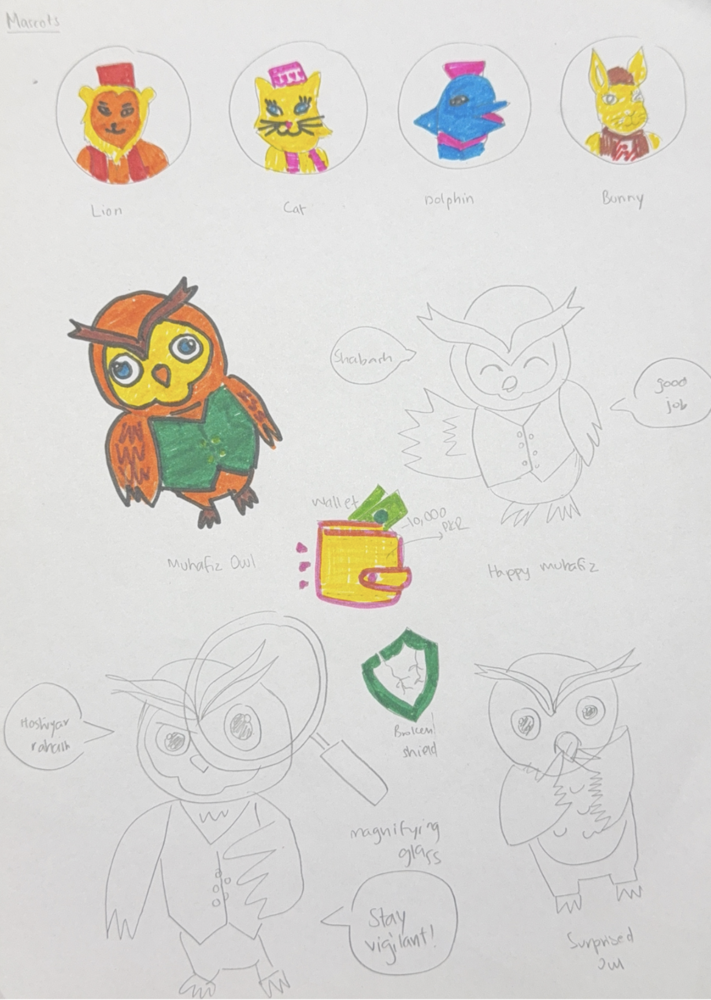
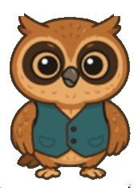
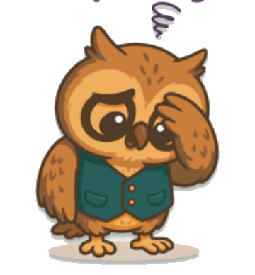
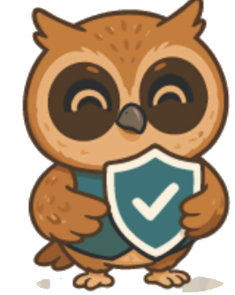
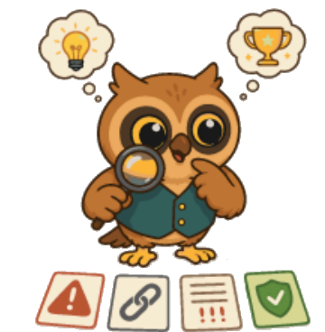
Final Interface & Design System
The final interface organizes around four pillars so the app never asks a stressed user to guess where they are.
Information architecture
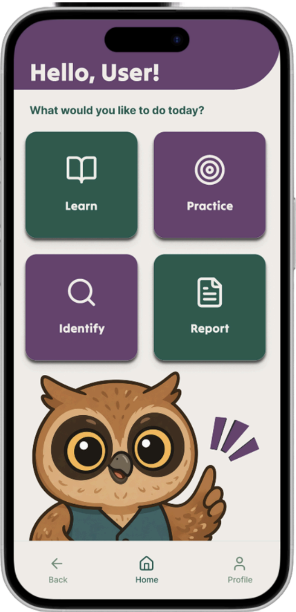
The hi-fi build itself split into depth (fully-built vertical slices proving the core loop end-to-end) and breadth (horizontal features that show the app's intended scale without slowing the prototype down).
- Onboarding, tutorial video & language selection
- Home dashboard & persistent bottom nav
- Learn: full Banking track, lesson-to-lesson
- Practice: Spoofed Calls, Find the Errors, True/False SMS
- Identify: Screenshot upload & Number Checker
- "About You" personalization (profession, education)
- Urdu localization (identical flow to English)
- Learn tracks: Family, Government, Prizes
- Practice: Scam-It game, Schedule Later
- Community Watch feed & full Profile (badges, friends)
Visual design principles
Navigation & Interaction Rules
- Strictly linear, flat architecture with no sub-menus to get lost in.
- Learn, Practice, Identify, Report stay permanently pinned to the bottom nav.
- Every interactive element is at least 60×60px for reduced fine-motor precision.
- No swipes, pinches, or multi-touch gestures, matching mental models of less phone-fluent users.
- Every tap fires three cues at once: a color change, a haptic pulse and a short chime. Errors add a plum border and a heavy thump while success adds gold confetti.
Color Palette
Use of AI in the process
No AI was used to make any of the screens. Each screen was hand sketched on paper first, then hand built in Figma. AI's only role was in mascot creation: Chacha Hoshiyar started as a paper sketch, was redrawn digitally in Procreate and only then did ChatGPT generate a supporting icon pack of his expressions across specific in-app scenarios.
Decisions I owned
- Built "pause" into the interaction, not the content. Every simulated call gives the user a physical action to interrupt panic in the moment not after it.
- Made the mascot carry the emotional labor institutions weren't providing. Positive reinforcement had to come from somewhere non-judgmental and constant, since both family and institutions showed up as shame sources in interviews.
- Turned shame into pride through the sharing mechanic. "Hoshiyar Karein!" reframes a completed practice module into a shareable WhatsApp safety post, turning "I almost got scammed" from confession into contribution.
- Cut novelty in favor of consistency after testing exposed the cost of being "unique." More below.
Usability Testing
With the static screens validated, it was time to see how they held up in motion. Once the high-fidelity screens were created, we began usability testing with adults over the age of 45. Each of the 17 sessions followed a structured format: a pre-test survey to baseline the participant's scam exposure and confidence, a task booklet walking them through core prototype tasks (checking the home screen, running a spoofed call, verifying a screenshot, and finding the report flow), and a post-test survey capturing trust, comprehension, and likelihood to recommend.
Every session closed with the standard 10-item System Usability Scale (SUS). Sessions were recorded and transcribed, ensuring our evaluation of user sentiment was backed by hard data rather than intuition.
Usability scores, 17 participants
SUS scores run 0–100; 68 is the industry average, and our 78.1 mean lands in the "good" band, meaning most participants found the app easy to learn and comfortable to use with little friction.
- Nearly every participant correctly explained all four home tiles after a single glance; one compared it directly to Duolingo.
- Verify Screenshot was the most understood, most wanted feature; it mirrored an instinct people already had.
- Video beat text, decisively. "No one is going to read. The videos should be short and simple."
- Good design doesn't fix institutional trust. One participant who'd already tried reporting a scam, GPS location and all, put it bluntly: "Until there is an immediate response, everything else is meaningless." That's a boundary interface design can't solve alone, and it felt more honest to name than paper over.
- Score spread tracked to vocabulary, not age. The oldest participants scored among the highest; confusion clustered around unfamiliar terms, not general tech comfort.
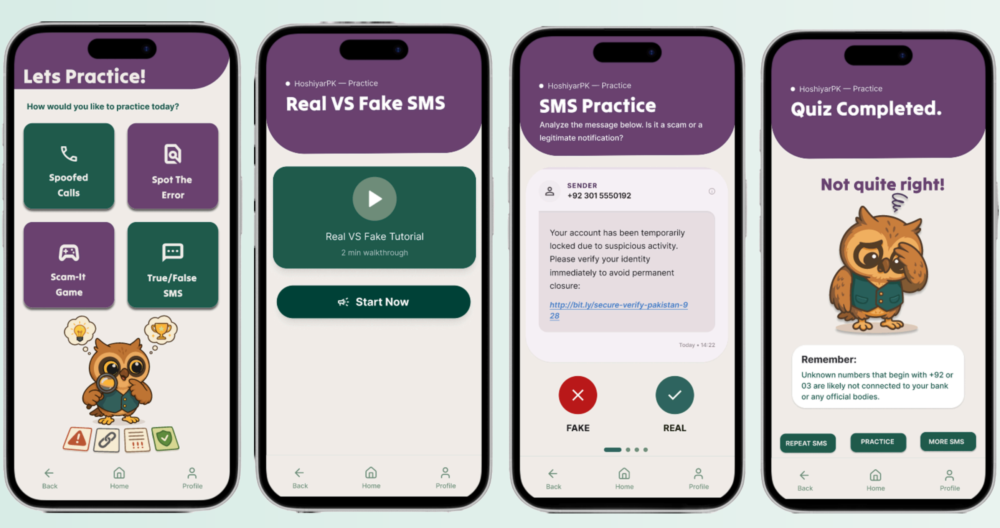
Beyond the Prototype
Once the build was done, we took HoshiyarPK out of Figma. We wrote and shot a short rap to pitch the app in a format people would actually watch and set up a live testing booth to get real strangers, not scheduled participants, tapping through the prototype.
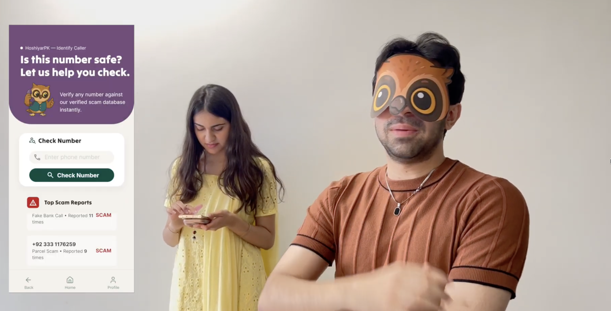
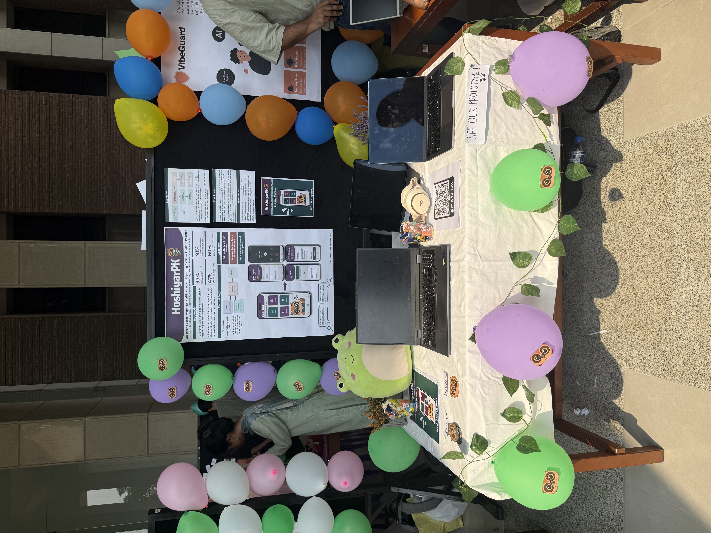
Reflection
The problem was far more pervasive than we initially realized. While interface design cannot fix institutional backlogs or systemic response times, user testing suggests it can successfully lower the cognitive cost of the exact moment right before a scam succeeds. A prototype alone cannot solve structural fraud, but active training builds vital cognitive resilience. I am proud to have shaped this product from the ground up.
- Build the call simulation as a real, unscripted voice interaction; the core premise depends entirely on the element of surprise.
- Ship Urdu as true parity, not an afterthought as every participant raised language preferences unprompted.
- Design the reporting flow's aftercare to show users what happens after they file, closing the feedback loop.